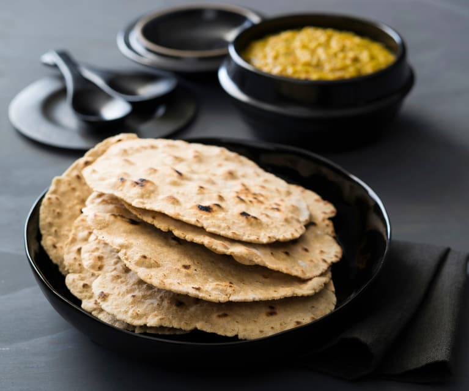

Flatbrød

Pan plano tipico de noruega
Es un pan integral muy delicioso el cual es reconmendable untarle mantequilla y queso
Ingredientes
- Harina integral y harina normals
- Un cuarto de taza de aceite de girasol
- Una cucharadita de bicarbonato
- Media cucharadita de sal
- Suero de leche
Pasos para hacer Flatbrød
- Añadir suero de leche a la masa y amasa durante 30 segundos
- Cubre la masa para que no se seque y forma bolas con puñados de un cuarto de taza de masa dándoles forma de círculo planos
- Con un rodillo, aplana la masa en círculos de unos 25 cm y colócalos en una bandeja para galletas sin engrasar.
- Marca los trozos por el borde pasando un cuchillo a lo largo de la masa, pero sin atravesarla, y repite el proceso hasta que no quede masa
- Por ultimo, Hornea en un horno precalentado a 175º C de 8 a 10 minutoss
Regresar a la pagina principal